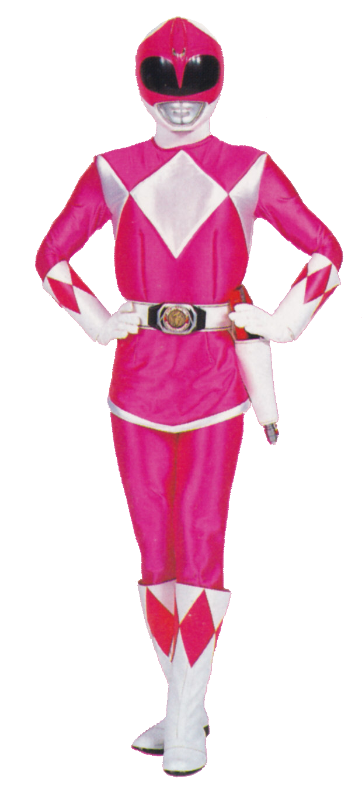
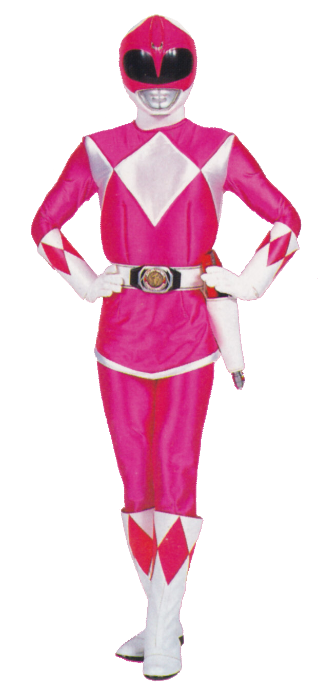
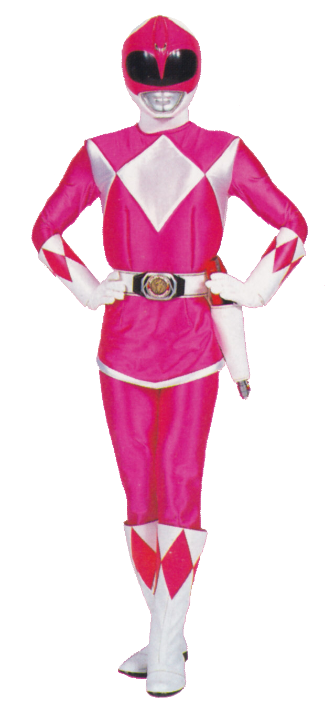

Power Rangers é uma franquia americana de entretenimento construída em torno de uma série de televisão em live-action de super-heróis baseada na franquia japonesa Super Sentai.
A franquia, que tem como seus produtos, filmes, histórias em quadrinhos, jogos eletrônicos e brinquedos pertencentes a Hasbro, começou
em Mighty Morphin Power Rangers (1993–96), atualmente se encontrando na vigésima oitava temporada, Power Rangers Dino Fury (2021–22).
Como um dos primeiros grupos live-action de super-heróis multiétnicos com ambos os gêneros na equipe principal.
A franquia conta com, a cada temporada, uma equipe diferente de heróis para proteger o planeta
adaptando elementos da franquia japonesa da Toei Company, da qual Power Rangers usa os uniformes, monstros, robôs e algumas vezes elementos das histórias.[1][2]
Nas adaptações para cinema, foram lançados: Power Rangers: O Filme (1995)
e Turbo: Power Rangers 2 (1997), ambos pela 20th Century Fox.[3][4] Power Rangers (2017), uma versão moderna dos heróis
originais da série que tinha arco para seis filmes, foi lançado pela Lionsgate.[5][6][7][8]
Criado por Haim Saban com a co-criação de Shuki Levy foram lançados em 1993,
com Mighty Morphin Power Rangers, na Fox Kids por Margaret Loesch. Curiosamente, anos antes pela Marvel Productions,
Loesch e Stan Lee detinham os direitos de adaptação de Toei.[9] Produzida e distribuída pela Saban Entertainment, em 2001, transmitindo a temporada Power Rangers Time Force,
a franquia foi comprada pela Walt Disney Company na aquisição do pacote Fox
Family Worldwide, valor de US$ 3 bilhões em dinheiro mais a absorção de uma dívida de US$ 2,3 bilhões.[10] Com o término de Power Rangers R.P.M.,
fãs da franquia desapontados por não uma nova produção em 2009, levantaram discussões em blogs, o que levou a várias petições.[11] Com isso, foi remixado
a temporada Mighty Morphin Power Rangers em 2010, reduzido em 32 episódios remasterizados.[12]
